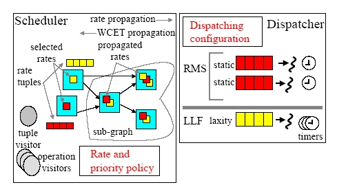
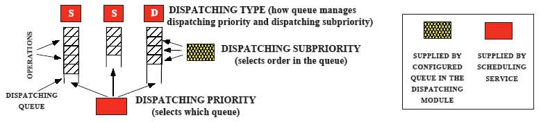
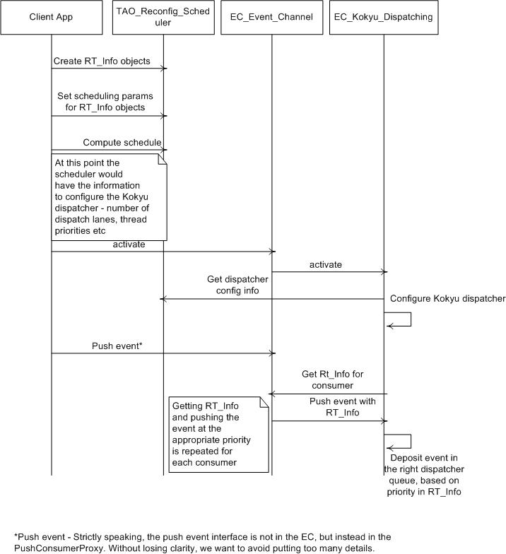

Kokyu - A middleware framework for flexible scheduling
and dispatching
Introduction
Strategized Scheduling framework
Flexible Dispatching Framework
Use of Kokyu within the TAO Real-time Event Channel(RTEC)
Configuration of RTEC to use Kokyu dispatching
Use of Kokyu within the Dynamic Scheduling
Real-time CORBA (DSRTCORBA) schedulers
How to write a new DSRT scheduler using Kokyu
Kokyu DSRTCORBA vs Kokyu RTEC
Current status
Future work
Papers on Kokyu
Introduction
Kokyu is a portable middleware scheduling framework designed to provide
flexible scheduling and dispatching services within the context of higher-level
middleware. Kokyu currently provides real-time scheduling and dispatching
services for TAO’s real-time CORBA Event Service, which mediates supplier-consumer
relationships between application operations. Kokyu consists primarily
of two cooperating infrastructure segments, illustrated in Figure 1:

Figure 1: Kokyu Scheduling and Dispatching Infrastructure
-
A pluggable scheduling infrastructure with efficient support for adaptive
execution of diverse static, dynamic, and hybrid static/dynamic scheduling
heuristics.
-
A flexible dispatching infrastructure that allows composition of primitive
operating system and middleware mechanisms to enforce arbitrary scheduling
heuristics.
The scheduler is responsible for specifying how operation dispatch requests
are ordered, by assigning priority levels and rates to tasks, and producing
a configuration specification for the dispatching mechanism. The dispatcher
is responsible for enforcing the ordering of operation dispatches using
different threads, requests queues, and timers configured according to
the scheduler’s specification. The combined framework provides an implicit
projection of scheduling heuristics into appropriate dispatching infrastructure
configurations, so that the scheduling and dispatching infrastructure segments
can be optimized both separately and in combination.
Strategized Scheduling framework
The Kokyu scheduling framework is designed to support a variety of scheduling
heuristics including RMS, EDF, MLF, and MUF. In addition, this framework
provides a common environment to compare systematically both existing and
new scheduling strategies. This flexibility is achieved in the Kokyu framework
via the Strategy pattern, which allows parts of the sequence of steps in
an algorithm to be replaced, thus providing interchangeable variations
within a consistent algorithmic framework. The Kokyu scheduling framework
uses the Strategy pattern to encapsulate a family of scheduling algorithms
within a fixed CORBA IDL interface, thereby enabling different strategies
to be configured independently from applications that use them.
Flexible Dispatching Framework
The right side of Figure 1 shows the essential features of Kokyu’s flexible
task dispatching infrastructure. Key features of the dispatching infrastructure
that are essential to performing our optimizations are as follows:
Dispatching queues: Each task is assigned by our strategized
Kokyu scheduling framework to a specific dispatching queue, each
of which has an associated queue number, a queueing discipline, and a unique
operating-system-specific priority for its single associated dispatching
thread.
Dispatching threads: Operating-system thread priorities decrease
as the queue number increases, so that the 0th queue is served by the highest
priority thread. Each dispatching thread removes the task from the head
of its queue and runs its entry point function to completion before retrieving
the next task to dispatch. Adapters can be applied to operations to intercept
and possibly short-circuit the entry-point upcall. In general, however,
the outermost operation entry point must complete on each dispatch.
Queueing disciplines: Dispatching thread priorities determine
which queue is active at any given time: the highest priority queue with
a task to dispatch is always active, preempting tasks in lower priority
queues. In addition, each queue may have a distinct discipline for determining
which of its enqueued tasks has the highest eligibility, and must ensure
the highest is at the head of the queue at the point when one is to be
dequeued. We consider three disciplines:
-
Static – Tasks are ordered by a static subpriority value – results in FIFO
ordering if all static subpriorities are made the same; static queues at
different priority levels can be used to implement an RMS scheduling strategy.
-
Deadline – Tasks are ordered by time to deadline; a single deadline queue
can be used to implement the earliest deadline first (EDF) scheduling strategy.
-
Laxity – Tasks are ordered by slack time, or laxity – the time to deadline
minus the execution time; a single laxity queue can be used to implement
the minimum laxity first (MLF) scheduling strategy; laxity queues at different
priority levels can be used to implement the maximum urgency first (MUF)
scheduling strategy.
Any discipline for which a maximal eligibility may be selected can be employed
to manage a given dispatching queue in this approach. Scheduling strategies
can be constructed from one or more queues of each discipline alone, or
combinations of queues with different disciplines can be used. Figure 2
illustrates the general queueing mechanism used by the dispatching modules
in the Kokyu dispatching framework.

Figure 2: Example Queueing Mechanism in a Kokyu Dispatching Module
In addition, this figure shows how the output information provided by
the Kokyu scheduling framework is used to configure and operate a dispatching
module. During system initialization, each dispatching module obtains the
thread priority and dispatching type for each of its queues, typically
from the scheduling service’s output interface. Next, each queue is assigned
a unique dispatching priority number, a unique thread priority, and an
enumerated dispatching type. Finally, each dispatching module has an ordered
queue of pending dispatches per dispatching priority. To preserve QoS guarantees,
operations are inserted into the appropriate dispatching queue according
to their assigned dispatching priority. Operations within a dispatching
queue are ordered by their assigned dispatching subpriority. To minimize
priority inversions, operations are dispatched from the queue with the
highest thread priority, preempting any operation executing in a lower
priority thread. To minimize preemption overhead, there is no preemption
within a given priority queue. The following three values are defined for
the dispatching type:
-
STATIC DISPATCHING: This type specifies a queue that only considers
the static portion of an operation’s dispatching subpriority.
-
DEADLINE DISPATCHING: This type specifies a queue that considers
the dynamic and static portions of an operation’s dispatching subpriority,
and updates the dynamic portion according to the time remaining until the
operation’s deadline.
-
LAXITY DISPATCHING: This type specifies a queue that considers the
dynamic and static portions of an operation’s dispatching subpriority,
and updates the dynamic portion according to the operation’s laxity.
Use of Kokyu within the TAO Real-time Event Channel(RTEC)
Figure 3 shows the sequence of operations that take place in the Kokyu
based dispatching module in the TAO RTEC. The client application registers
all relevant operations with the scheduler along with their real-time requirements.
This is done through the concept of an RT_Info
(see
TAO/orbsvcs/orbsvcs/RtecScheduler.idl) structure which is a structure that
contains the execution time, criticality, period, etc of an operation.
The client then calls compute_schedule
method on the scheduler. The scheduler creates a dependency graphs of all
operations and partitions operations into equivalence classes based on
the scheduling parameters supplied. The scheduler can be configured to
have any scheduling policy which determines the equivalence class partitioning
(queues) and possibly a partial ordering of operations within an equivalence
class (ordering within a queue). Once this is done, the scheduler has the
configuration information for the Kokyu dispatcher like the number of dispatch
queues, priorities for the threads processing each queue, etc.
When the client calls activate
on the event channel, the EC inturn activates the Kokyu based EC dispatching
module. The EC dispatching module queries the dispatch configuration from
the scheduler and uses that to create the Kokyu dispatcher with the appropriate
number of lanes and threads. When an event is pushed into the EC, the EC
pushes the event to the appropriate consumers, who are subscribed to that
event. For each consumer, the EC queries the scheduler for the RT_Info
of that consumer. It then hands over the event to the Kokyu based dispatching
module. The dispatching module then enqueues the event into the appropriate
queue for processing by the thread watching that queue.

Figure 3: Kokyu based dispatching module within TAO RTEC
Configuration of RTEC to use Kokyu dispatching
Static configuration: In the svc.conf file, make sure you
have the following configuration for Kokyu dispatching. You can combine
this with other -ECxxx options.
static EC_Factory "-ECdispatching kokyu
SCHED_FIFO -ECscheduling kokyu -ECfiltering kokyu"
To run the threads in the real-time FIFO class, use SCHED_FIFO. You
could use SCHED_RR and SCHED_OTHER also.
The default is SCHED_FIFO.
In your program, call
TAO_EC_Kokyu_Factory::init_svcs ();
to statically create the EC Kokyu dispatching and other Kokyu related
modules.
Dynamic configuration: In the svc.conf file, make sure
you have the following configuration for Kokyu dispatching. You can combine
this with other -ECxxx options.
dynamic EC_Factory Service_Object *
TAO_RTKokyuEvent:_make_TAO_EC_Kokyu_Factory() "-ECdispatching kokyu -ECscheduling
kokyu -ECfiltering kokyu"
Use of Kokyu within the Dynamic Scheduling
Real-time CORBA (DSRTCORBA) schedulers
An initial implementation of mechanisms to support DSRTCORBA schedulers
have been released. DSRTCORBA uses the concept of distributed threads,
which traverse multiple end systems giving the application the illusion
of a single logical thread executing an end-to-end task. The distributed
thread carries with it the scheduling parameters like importance, deadline,
etc so that it can get scheduled by a local scheduler on each endsystem.
The Kokyu DSRT dispatching framework is used as an enforcing mechanism.
The DSRT schedulers are available in the directory $TAO_ROOT/examples/Kokyu_dsrt_schedulers.
They use the Kokyu DSRT
dispatching classes present in $ACE_ROOT/Kokyu. These act as wrappers/adapters
around the Kokyu DSRT dispatcher. The Kokyu DSRT dispatcher is responsible
for scheduling threads which ask the dispatcher to schedule themselves.
Currently there are two implementations for the Kokyu DSRT dispatcher.
One uses a condition-variable based approach for scheduling threads and
the other manipulates priorities of threads and relies on the OS scheduler
for dispatching the threads appropriately.
CV-based approach:
In this approach, it is assumed that the threads "yield" on a regular basis
to the scheduler by calling update_scheduling_segment. Only one
thread is running at any point in time. All the other threads are blocked
on a condition variable. When the currently running thread yields, it will
cause the condition variable to be signalled. All the eligible threads
are stored in a scheduler queue (rbtree), the most eligible thread determined
by the scheduling discipline. This approach has the drawback that it requires
a cooperative threading model, where threads yield voluntarily on a regular
basis. The application threads are responsible for doing this voluntary
yielding.
OS-based approach:
This approach relies on the OS scheduler to do the actual thread dispatching.
The Kokyu DSRT dispatcher manipulates the priorities of the threads. The
scheduler maintains a queue (rbtree) of threads. The scheduler also has
an executive thread, which runs at the maximum available priority. This
thread runs in a continuous loop until the dispatcher is shut down. The
executive thread is responsible for selecting the most eligible thread
from the scheduler queue and bump up its priority if necessary while bumping
down the priority of the currently running thread, if it is not the most
eligible. There are four priority levels required for this mechanism to
work, listed in descending order of priorities. For example, a thread running
at Active priority will preempt a
thread running at Inactive priority level.
-
Executive priority - priority at which the scheduler executive thread runs.
-
Blocked priority - this is the priority to which threads about to block
on remote calls will be bumped up to.
-
Active priority - this is the priority to which the most eligible thread
is set to.
-
Inactive priority - this is the priority to which all threads except the
most eligible thread is set to.
As soon as a thread asks to be scheduled, a wrapper object is created and
inserted into the queue. This object carries the qos (sched params) associated
with that thread. A condition variable is signalled to inform the executive
thread that the queue is "dirty". The scheduler thread picks up the most
eligble one and sets its priority to active and sets the currently
running thread priority to
inactive.
The drawback to this approach is that it relies on the OS scheduler
to dispatch the threads. Also, with the current implementation, there is
only one thread running at active priority and others are all at inactive
level. This will create undesirable effects with multi-processor systems,
which could select any one of the inactive level threads and this
could cause priority inversions.
How to write a new DSRT scheduler using Kokyu
One can use one of the schedulers as a starting point. The variation points
are
-
The scheduler parameters that need to be propagated along with the service
context.
-
The QoS comparison function, that determines which thread is more eligible.
To aid (1), we have created a Svc_Ctxt_DSRT_QoS idl interface (see ./Kokyu_qos.pidl).
This interface currently has the necessary things to be propagated for
FP, MIF and MUF schedulers. This can be altered if necessary to accomodate
new sched params. The idea here is to let the IDL compiler generate the
marshalling code (including Any operators) so that these parameters can
be shipped across in the service context in an encapsulated CDR.
To create customized QoS comparator functions, we used the idea of C++
traits to let the user define customized comparator functions. For example,
the MIF scheduler uses the following traits class.
struct MIF_Scheduler_Traits
{
typedef RTScheduling::Current::IdType Guid_t;
struct _QoSDescriptor_t
{
typedef long Importance_t;
Importance_t importance_;
};
typedef _QoSDescriptor_t QoSDescriptor_t;
typedef Kokyu::MIF_Comparator<QoSDescriptor_t>
QoSComparator_t;
class _Guid_Hash
{
public:
u_long operator () (const Guid_t&
id)
{
return ACE::hash_pjw
((const char *) id.get_buffer (),
id.length ());
}
};
typedef _Guid_Hash Guid_Hash;
};
The idea of traits makes the Kokyu dispatcher more flexible in terms
of creating new schedulers. For example, the Kokyu classes do not care
about what concrete type Guid is. It could be an OctetSequence for some
applications, whereas it could be an int for some others. The exact type
is defined by the application (in this case, the MIF scheduler) using the
traits class. In the above traits class the Guid's type is defined to be
an octet sequence (indirectly). The Kokyu dispatcher expects the following
typedef's to
be present in the traits class:
Guid_t - Type of GUID.
QoSDescriptor_t - aggregate for scheduler parameters
QoSComparator_t - used by the scheduler queue to determine
most eligible item
Guid_Hash - used by the internal hash map in the scheduler
to hash the guid.
It is also expected that the following operator be defined for comparing
QoS parameters. This comparator function will be used by the scheduler
queue to determine the most eligible item in the queue.
QoSComparator_t::operator ()(const QoSDescriptor_t& qos1,
const QoSDescriptor_t& qos2)
Kokyu DSRTCORBA vs Kokyu RTEC
Currently we have separate interfaces for DSRTCORBA and RTEC dispatching
mechanisms. Once we get more use cases and experience, there is a possibility
of these getting merged in the future. The RTEC related dispatching interface
is in Kokyu::Dispatcher (Kokyu.h) and DSRTCORBA related dispatching
interface is in Kokyu::DSRT_Dispatcher (Kokyu_dsrt.h)
Current status
Kokyu dispatching framework is available as a separate module under ACE_wrappers/Kokyu
as part of the ACE/TAO
distribution. Note that this module is not dependent on TAO, though
it is built on top of ACE. The TAO Event Channel uses the Strategy and
Service Configurator patterns to use configurable dispatching modules.
A Kokyu based EC dispatching module is available in the TAO/orbsvcs/orbsvcs/RTKokyuEvent
module. This module acts as an adapter between the Kokyu dispatcher and
the RTEC.
Kokyu scheduling framework is available under the TAO source tree (TAO/orbsvcs/orbsvcs/Sched).
An example using the RTEC Kokyu dispatching module is available under
TAO/orbsvcs/examples/RtEC/Kokyu.
Future work
-
Currently there is no support for timers in the Kokyu dispatching module.
We plan to do this in the near future.
-
It looks like there is a general structure to the different schedulers.
May be this can be abstracted using templates or some similar mechanism.
-
Thread sched policy and sched scope are currently being passed explicitly
from the application to the scheduler. This can be changed later to get
this information from the ORB. This requires the usage of RTORB and the
actual values can be set using svc.conf parameters for RT_ORB_Loader.
-
See whether the approaches could be extended to multiprocessor systems.
Papers on Kokyu
-
Christopher D. Gill, Dissertation:Flexible
Scheduling in Middleware for Distributed Rate-Based Real-Time Applications
-
Christopher D. Gill, David L. Levine, and Douglas C. Schmidt The
Design and Performance of a Real-Time CORBA Scheduling Service, Real-Time
Systems: the International Journal of Time-Critical Computing Systems,
special issue on Real-Time Middleware, guest editor Wei Zhao, March 2001,
Vol. 20 No. 2
-
Christopher D. Gill, Douglas C. Schmidt, and Ron Cytron, Multi-Paradigm
Scheduling for Distributed Real-Time Embedded Computing, IEEE Proceedings
Special Issue on Modeling and Design of Embedded Systems, Volume 91, Number
1, January 2003.